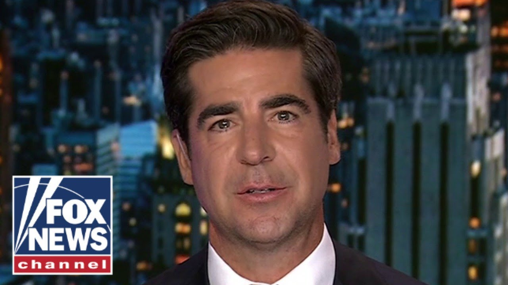

【马斯克白宫欢送会总结】
Summary: A farewell event was held at the White House as Elon Musk officially concluded his advisory role in the government. Despite controversies during his tenure, Musk actively participated in discussions on technology and energy policies. In his remarks, President Trump stated that Musk would continue to serve as an informal advisor and praised his contributions to advancing American technological innovation. The atmosphere at the event was formal yet relaxed, with representatives from both the political and business sectors in attendance. In his speech, Musk expressed gratitude for the White House team's collaboration and trust, and said he would continue focusing on his business ventures and policy advocacy—especially in the areas of sustainable energy, artificial intelligence, and space exploration. Though he is stepping away from his government role, Musk is expected to remain an influential figure across both politics and industry.
摘要： 随着伊隆·马斯克正式结束其在政府中的顾问职务，白宫为其举行了欢送活动。尽管任期内伴随诸多争议，马斯克积极参与了科技与能源政策的相关讨论。特朗普总统在讲话中表示，马斯克将继续担任非正式顾问，并赞扬他在推动美国科技创新方面所作出的贡献。活动现场气氛庄重而轻松，政界与商界的多位代表出席致意。马斯克在致辞中表达了对白宫团队合作与信任的感谢，并表示今后将继续专注于商业运营与政策倡导，尤其是在可持续能源、人工智能与太空探索等领域。虽然离开了政府岗位，马斯克仍被广泛认为将在政界与商界之间继续发挥影响力。

⏱️ Estimated Reading Time: 5 min
[Music] The Doge father brought a chainsaw to Washington.
[音乐] Doge之父带着电锯来到华盛顿。
And after 130 days, he's saying goodbye.
130天后，他告别了。
Today, Trump threw Elon a farewell party, but before it started, he threw a party for Trump.
今天，特朗普为马斯克举办了欢送会，但在此之前，马斯克为特朗普办了一场派对。
Numbers have just come out, which are rather extraordinary, and I thought I'd play a tape of one of the people who I've respected over the years from uh, you know, Joe Kieran and Rick Santelli.
最新公布的数据非常惊人，我打算播放一段我多年来尊敬的乔·基兰和里克·桑特利的录音。
This just came out and we'll just play that for a second.
这是刚发布的，我们稍作播放。
Personal income is up 8/10 up 8/10en of a percent.
个人收入增长了0.8%。
That is almost triple the expectations.
几乎是预期的三倍。
Trump wants to be a Fox News anchor.
特朗普想成为福克斯新闻主播。
He throws the sound bites, argues with guests.
他抛出简短言论，与嘉宾争论。
Welcome to Oval Office prime time tonight.
欢迎来到今晚的椭圆形办公室黄金时间。
But it was Elon's day.
但今天是马斯克的日子。
He's one of the greatest business leaders and innovators the world has ever produced.
他是世界上最伟大的商业领袖和创新者之一。
He stepped forward to put his very great talents into the service of our nation and we appreciate it.
他挺身而出，将自己的才华奉献给国家，我们对此表示感谢。
And I just want to say that Elon has worked tirelessly helping lead the most sweeping and consequential government reform program in generations.
我想说，马斯克不知疲倦地领导了多年来最具深远影响的政府改革计划。
$175 billion in waste was doed.
削减了1750亿美元的浪费。
Government computers were modernized and 2% of the workforce accepted very generous severance packages.
政府电脑现代化，2%的员工接受了丰厚的遣散费。
But we'll always remember Elon when we see the shiny red Tesla.
但每当我们看到闪亮的红色特斯拉时，都会想起马斯克。
Caroline and Margot took it out for a spin last night.
卡罗琳和玛格特昨晚试驾了它。
And if you look closely, Steven Miller's in the back.
仔细看的话，史蒂文·米勒坐在后排。
47 gave Musk a key to the White House and said he'll be back and forth because Doge is his baby.
特朗普给了马斯克白宫钥匙，说他会常来常往，因为Doge是他的心血。
Just because Musk is leaving doesn't mean Doge is going anywhere.
马斯克离开并不意味着Doge会消失。
Big Balls is embedded.
它已经根深蒂固。
This is not the end of Doge, but really the beginning.
这不是Doge的结束，而是开始。
Um my time as a special government employee necessarily had to end.
我作为特别政府雇员的时间必须结束。
It was a limited time thing.
这是一个有限期的安排。
It's 134 days I believe which ends in a few days.
134天后到期。
So uh so that uh you know it comes with a time limit.
所以它有时间限制。
Um and uh but the Doge team will only grow stronger over time.
Doge团队会越来越强大。
Um the Doge influence will only grow stronger.
影响力也会增强。
It's uh I'd liken it to sort of bu Buddhism.
我将其比作佛教。
It's like a way of life.
它是一种生活方式。
Um, so it is permeating throughout the government and I'm confident that over time we'll see a trillion dollars of savings uh and a reduction in in a trillion dollars of waste of fraud production.
它正在渗透整个政府，我相信未来我们将看到万亿级的节约和浪费减少。
Elon was in good spirits, but he had a black eye.
马斯克精神不错，但有一只黑眼圈。
Who hit him?
谁打的？
Must have been a lefty.
肯定是左派。
Is your eye okay?
你的眼睛没事吧？
What happened to your your eye?
怎么了？
I noticed there's a bruise there.
我注意到有淤青。
Well, it wasn't uh I wasn't anywhere near France, so um but uh Yeah.
不是法国人干的。
Know, I was just horsing around with little X and I said, "Uh, go ahead, punch me in the face."
我和小X玩耍时让他打我的脸。
And he did.
他照做了。
Turns out even a 5-year-old punching you in the in the face actually does.
5岁小孩打脸也挺疼的。
That was X that did X could do it.
是小X干的。
Like M said, he wasn't the only one this week to take a beating.
这周挨打的不止他一个。
This week, there was a video on board a plane that showed the first lady of France slapping her husband, Emanuel Mcronone.
法国第一夫人扇马克龙耳光的视频曝光了。
Do you have any world leader to world leader marital advice on the phone?
你有什么世界领导人之间的婚姻建议吗？
Make sure the door remains closed.
确保门关好。
That was not good.
情况不妙。
No, I spoke to him and uh he's uh he's fine, too.
我和他聊过，他没事。
They're fine.
他们没事。
They're two really good people.
他们是好人。
I know him very well and uh I don't know what that was all about, but uh I know him very well and they're fine.
我很了解他，不清楚发生了什么，但他们很好。
What's worse, getting a black eye from your wife or your kid?
被妻子还是孩子打更糟？
Probably your wife.
可能是妻子。
CNN says it was Washington that gave him the black eye.
CNN说是华盛顿给了他黑眼圈。